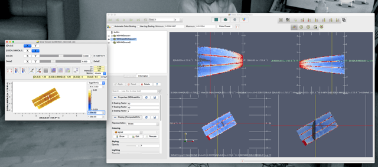
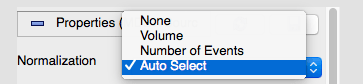

hi
this is difficult to explain but hopefully the screen shots will help.
After a rebin the SV shows a representation of the data with normalisation set to ‘no’ which seems reasonable. The VSI cannot replication this view. Setting the normalisation to #events gives a rather flat featureless representation which is the same in both the SV and the VSI.
In short it seems that one cannot see the pretty spin waves in the VSI anymore. I hope the screen shots help with what i’m trying to say.
cheers
jon

Hi @mythicalJon. This is a known problem. It’s down to the way that we are trying to predict the correct normalization to use as we load the data in the VSI. It looks like you have #Events normalization selected for the SliceViewer.
In the VSI, when you first open the data you can change the normalization

If you change it to
Number of Events, you should get what you want.
The correct normalization selection is something we are trying to get fixed for the 3.5 release. This issue is being worked on here
Hi @mythicalJon.
Here is a quick workflow to figure out your normalization:
- If you have MDNorm… algorithm in your history, you should probably use NoNormalization
- If you have elastic scattering only, NEVER use number of event normalization. Volume normalization is the preferred option. No normalization works on a regular grid, just that the intensity scale will change when you change the bin size.
- For inelastic, if you start with a histogram in energy transfer (that’s the equivalent of how horace/mslice works), use NumberOfEventsNormalization. This will take care of the averaging of S(Q,w). If you don’t have a histogram in energy transfer as your starting point, you need to either use MDNormDirectSC (and see 1), or bin your data before converting to MD, and see the beginning of point 3. Otherwise the data does not make physical sense